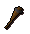
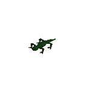
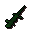
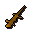
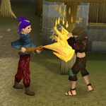

Hunter - Net Trapping (Level 29+)
Net Trapping

With a net and rope in your inventory (bought at any good Fishing and general store, respectively) it is possible to set a trap by left-clicking 'Set-trap' on the young trees that grow near the lizard or salamander. Penguins obviously live nowhere near suitable trees, but old fishing rods can often be found frozen into the ice and waiting for a net. Once set, it is best to walk as far away as possible, so that you do not repel the animals.
Your prey are also drawn by bait, with each having a particular favourite. See the creature table below to find out what these baits are.

This trap can be smoked with a torch to remove your scent, increasing your chance of success when net trapping. To do so you will need a torch, bought from the Hunter stores of Yanille and Nardah, and a Hunter level of 39 or above. Lighting the torch and using it on a set-up net trap will greatly increase the chance of snagging yourself a reward.
Additionally, being camouflaged will help to remove your scent and make you blend in to your surroundings when hunting orange salamanders. Wearing desert or graahk camouflage gear, garnered from the fur of trackable desert devils and graahk pitfall creatures, will make it more likely that you are successful when net trapping. A complete set of the suitable gear (desert camo-top and camo-trousers, for example) will increase those chances even further.
Only so many net traps can be laid at one point, depending on your Hunter level:
| Hunter level | Maximum traps |
| 20 - 39 | Two traps at a time |
| 40 - 59 | Three traps at a time |
| 60 - 79 | Four traps at a time |
| 80 - 99 | Five traps at a time |
If you have reached your maximum number of traps then one will have to be dismantled before another can be laid. It is also possible to wait for a trap to dismantle itself, which will happen after a length of time.
Net Trapping Locations
Lizards and salamanders tend toward areas that are dangerous to humans, and as such are hazardous beasts to catch. Luckily, they also tend toward areas where young trees grow, suitable for you to bend and use as a makeshift net trap while holding a rope and net in your inventory.
Find out where to hunt your various prey by reading Hunter - Locations.
Net Trapping Creatures
Creature |
Levels required |
Experience gained |
Hunter reward |
Bait |
Notes |
Location |
|  Swamp lizard |
29 |
152 | Swamp lizard | Guam tar | Swamp lizards can be used as a Ranged weapon. | Swamp Lizard Area in Morytania |
![[image]](../../img/main/kbase/skills/hunter/npcs/orange_salamander.gif) Orange salamander |
47 |
224 | Orange salamander | Marrentill tar | Orange salamanders can be used as a Ranged weapon. | Uzer Hunter area |
![[image]](../../img/main/kbase/skills/hunter/npcs/penguin_npc.gif) Penguin (polar) |
50 |
250 | Penguin | Raw cod | KGP agents can be handed over to Jim the polar bear for extra experience. | Iceberg Hunter area |
![[image]](../../img/main/kbase/skills/hunter/npcs/red_salamander.gif) Red salamander |
59 |
272 | Red salamander | Tarromin tar | Red salamanders can be used as a Ranged weapon. | Red Salamander Area, south-west of Ardougne |
![[image]](../../img/main/kbase/skills/hunter/npcs/black_salamander.gif) Black salamander |
67 |
304 | Black salamander | Harralander tar | Black salamanders can be used as a Ranged weapon. | Black Salamander Area, Wilderness north-east of the Chaos Temple |
Net Trapping Rewards
The salamanders and swamp lizards received from net trapping can be used as a two-handed Ranged weapon when filled with their requisite fuels.
| Creature | Levels required |
Combat bonuses |
Favoured herb |
|  Swamp lizard |
30 30 30 |
Slash +10 Range +20 Strength +22 |
Guam |
|  Orange salamander |
50 50 50 |
Slash +19 Range +29 Strength +31 |
Marrentill |
![[image]](../../img/main/kbase/skills/hunter/items/red_salamander.gif) Red salamander |
60 60 60 |
Slash +37 Range +47 Strength +49 |
Tarromin |
![[image]](../../img/main/kbase/skills/hunter/items/black_salamander.gif) Black salamander |
70 70 70 |
Slash +59 Range +69 Strength +71 |
Harralander |

Once both the tar and salamander have been wielded the attack style can be changed. Set your style to Scorch and your Strength experience will rise. Flare, in turn, will raise your Ranged experience, while Blaze will boost your Magic. This versatility makes the salamander a weapon-of-choice for the rounded adventurer.

More articles in
Hunter
|
|